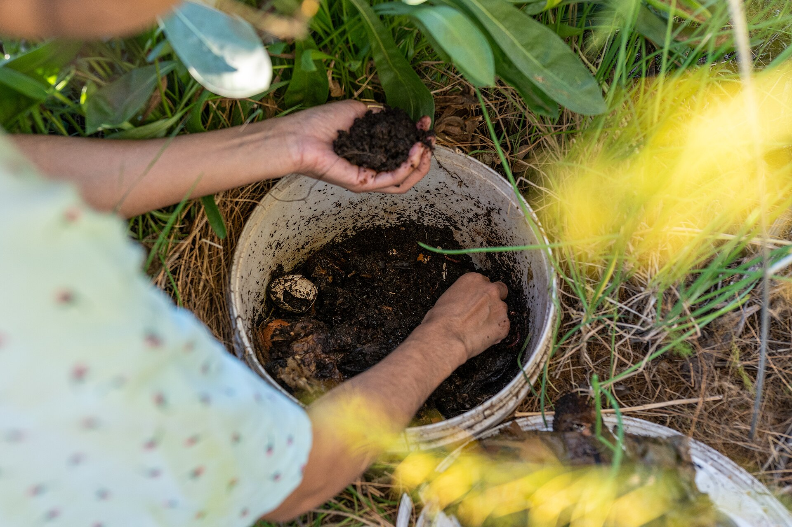

Electric Composters: A Complete Guide
How countertop appliances like FoodCycler and GEME process kitchen waste in hours — and the big difference between a dehydrator and a bio-reactor.
What Is an Electric Composter?
An electric composter is a countertop appliance that processes kitchen waste in hours rather than weeks. There are two fundamentally different kinds. The first is a dehydrator — it uses heat, a rotating blade, and a fan to dry and grind waste into crumbly material. The second is a bio-reactor — it uses living microbes in a warm, moist chamber to actively decompose waste into a compost-like output. The most popular dehydrator is the FoodCycler (made by Science Corporation in Canada). The bio-reactor category is led by GEME. Both aim to solve the same problem: how do you deal with kitchen scraps without sending them to a landfill, without creating odors, and without spending hours tending a compost bin? The catch is that they produce very different results, and that difference drives most of the decisions in this guide.
Key Fact: Neither kind produces finished, shelf-ready compost on its own. A dehydrator gives you dried, ground material; a bio-reactor gives you a moist compost base. Both should be mixed into garden soil or added to an outdoor compost pile to finish the job. Think of them as accelerators rather than replacements for traditional composting.
Two Kinds of Electric Composters: Dehydrators vs Bio-Reactors
Understanding the difference between these two approaches is the single most important thing to get right before you buy, because it determines what the machine outputs, what you can put in it, and what it will cost you to run.
Type 1: Dehydrators (the FoodCycler approach)
A dehydrator treats the job like a food dryer. Throughout a four-to-six hour cycle, heating elements raise the internal temperature to between 140 and 160 degrees Fahrenheit while a fan circulates air through the bucket and an activated carbon filter captures odors before they exit through the vent. At the same time, a rotating blade at the bottom of the bucket churns, breaks down, and grinds the material as moisture evaporates. The result is a dry, crumbly output in the texture of potting soil or coarse coffee grounds — roughly eighty percent lighter and ninety percent smaller by volume. Because the process is heat-based rather than biological, the output is not finished compost; it is dried, ground organic matter that still needs to complete decomposition in soil or an outdoor pile. It also means the machine runs in discrete batch cycles and depends on a replaceable carbon filter to keep odors in check.
Type 2: Bio-Reactors (the GEME approach)
A bio-reactor keeps the biology alive instead of baking it out. GEME machines create a warm, moist, oxygen-rich chamber and introduce a living microbial culture — GEME calls its culture Kobold™. A controller (GEME calls it GEMEBrain™) adaptively regulates heat, airflow, moisture, and mixing so decomposition keeps happening continuously. Rather than a timed batch, the machine is designed for a continuous "add and forget" workflow: open the lid and toss in scraps whenever you like, and the culture keeps working. The output is a moist, nutrient-rich "active compost base" rather than dry flakes. Two things follow from this biology-first design. First, because it is a living system rather than a dryer, it can handle material that dehydrators struggle with — GEME states it handles 400+ types of kitchen bio-waste, including meat, dairy, oily leftovers, and small bones. Second, the odor control comes from a permanent metal-ion oxidation system rather than a carbon filter you buy and replace, so there is no recurring consumable. GEME reports up to about 95 percent volume reduction. As with any electric composter, the output is a compost base that should be mixed into garden soil or added to an outdoor pile — GEME recommends a 1-part compost to 8-parts soil ratio.
Pro Tip: When someone says "electric composter," ask which kind. A dehydrator (FoodCycler) gives you dry crumbs that need finishing and requires filter refills. A bio-reactor (GEME) gives you a moist compost base, handles meat and dairy, and has no consumables — but costs more upfront. The right answer depends on your household size and how much post-processing you want to do.
FoodCycler Models Compared
FoodCycler (Science Corporation) offers two main models for residential use, each designed for different household sizes and waste volumes. All models share the same basic drying-agitation-grinding process but differ in bucket capacity, cycle time, and power consumption.
FoodCycler Eco 3
The entry-level model with a 3-liter (approximately one gallon) bucket. Ideal for single occupants or couples who generate minimal kitchen waste. Cycle time is approximately five to six hours depending on moisture content of the input material.
FoodCycler Eco 5
The most popular model with a 5-liter (approximately 1.3 gallon) bucket. Designed for households of two to four people. Cycle time is approximately five hours. The larger capacity means fewer loading cycles per week and better energy efficiency per pound of waste processed.
| Model | Capacity | Cycle Time | Power Use |
|---|---|---|---|
| Eco 3 | 3 liters (~1 gal) | 5-6 hours | ~0.7 kWh |
| Eco 5 | 5 liters (~1.3 gal) | ~5 hours | ~0.9 kWh |
GEME Models Compared
GEME is a bio-composter brand with two residential models, both built on the same Kobold™ microbial bio-reactor design and both using a permanent metal-ion purification system (no filter replacements). They differ mainly in capacity, daily throughput, and how much floor space they need. Both ship to the US (110V) and run the continuous "add and forget" workflow described above.
GEME Terra 2
The compact model, sized for apartments and smaller households of one to three people. It has a 14-liter capacity, processes about two kilograms of waste per day, and is designed to be cleaned roughly every three to six months depending on usage. Because it is a bio-reactor, it handles meat, dairy, and small bones, and its permanent ion filter means no recurring consumables. It runs quietly at roughly 35 to 40 decibels.
GEME Pro
The heavy-duty model for larger households of four or more and heavy daily waste. With a 19-liter capacity it can take up to about five kilograms of waste a day — enough for a family's daily scraps, a whole watermelon rind, or garden clippings — and it can run six to twelve months between cleanings depending on usage. It commands more floor space and is heavier than the Terra 2, but it is built for throughput and longer harvest intervals.
| Model | Capacity | Daily Throughput | Cleaning Interval | Best For | Price (USD) |
|---|---|---|---|---|---|
| Terra 2 | 14 liters | ~2 kg/day | Every 3-6 months | 1-3 person households, apartments | $699 |
| Pro | 19 liters | ~5 kg/day | Every 6-12 months | 4+ person households, heavy waste | $899 |
Which to pick: If you live in an apartment or a smaller home (one to three people) and want a compact unit, the Terra 2 is the fit. If you have four or more people, cook heavily every day, or also want to toss in garden clippings, the Pro's larger tank and longer cleaning intervals are worth the step up.
FoodCycler vs GEME: Which Should You Choose?
FoodCycler and GEME are both legitimate electric composters, but they take opposite approaches — one is a dehydrator, the other a bio-reactor. Here is a side-by-side comparison of the two approaches to help you decide.
| Feature | FoodCycler (dehydrator) | GEME (bio-reactor) |
|---|---|---|
| Technology | Heat + rotating blade grinds and dries | Living microbes in a warm, moist chamber |
| Output | Dry, ground crumbs (needs post-processing) | Moist "active compost base" |
| Meat & dairy | Limited — small amounts only | Yes — 400+ bio-waste types, incl. meat, dairy, small bones |
| Odor control | Replaceable activated carbon filter | Permanent metal-ion oxidation (no replacement) |
| Cycle | Batch, ~4-6 hours | Continuous "add and forget" |
| Consumables | Carbon filter refills (recurring) | None (permanent filter) |
| Noise | Moderate (fan + blade), ~40-50 dB | Quiet, ~35-40 dB |
| Starting Price (USD) | ~$450-$700 | $699 (Terra 2) / $899 (Pro) |
Bottom Line: Choose a FoodCycler if you want the simplest, most widely available option at a lower price and you are happy to finish the dried output in soil and buy filter refills. Choose GEME if you want to compost meat and dairy, want a moist output that needs less finishing, and want to eliminate recurring consumables — and you can absorb the higher upfront cost.
Setup and Installation
Both the FoodCycler and GEME are designed for plug-and-play setup. There is no plumbing and no special electrical requirements beyond a standard 120V outlet in the US, and no real assembly. The main difference is the first-run routine: a dehydrator runs an empty burn-in cycle, while a bio-reactor needs its microbial culture primed.
Unboxing and Initial Setup
- Remove packaging: Take out all components and remove protective foam or plastic. Keep the box for at least thirty days in case you need to return the unit.
- Clean the chamber: Wash the interior bucket or tank with warm soapy water before first use. Rinse thoroughly and dry completely. Both brands recommend hand-washing only — do not put the bucket in the dishwasher.
- Set up the odor system: FoodCycler: install the included activated carbon filter in the lid. GEME: there is nothing to install — the permanent metal-ion purification system is built in, so you skip this step entirely.
- Position the unit: Place on a flat, stable surface with at least two inches of clearance on all sides for ventilation.
First Run
FoodCycler (dehydrator): Run an empty cycle before adding food waste. This burns off manufacturing residues and gives you a feel for the noise level and airflow. The empty cycle takes roughly two to three hours.
GEME (bio-reactor): Prime the culture once. Add the included Kobold™ microbial starter pack and about 500 ml of water, then wait roughly six to eight hours for the culture to activate before adding your first scraps. After that, operation is automatic — tap the sensor and toss in waste, and the machine starts on its own.
Note: You can place your electric composter near an exterior wall or window. Just make sure the top of the unit is not covered — for example, do not install it directly under a cabinet without adequate clearance. On the FoodCycler the exhaust vent reaches 100 to 120 degrees Fahrenheit and needs room to vent properly.
Ongoing Maintenance
- FoodCycler: Clean the bucket after every few cycles with warm soapy water. Replace the activated carbon filter every three to six months depending on usage — a noticeable increase in odor is your cue. Wipe the blade assembly roughly once a month.
- GEME: There is no filter to replace. Empty the finished compost base when you need it (keeping a little inside as the starter bed for the next batch), and give the tank a cleaning about every three to six months on the Terra 2 or every six to twelve months on the Pro, depending on usage.
Operating Costs Breakdown
Understanding the true cost of running an electric composter helps you evaluate whether it fits your budget. The costs break down into three categories: upfront purchase, electricity per cycle, and ongoing consumables.
| Cost Category | Annual Estimate (avg household) | Notes |
|---|---|---|
| Purchase price | $450-$700 (FoodCycler) / $699-$899 (GEME) | One-time; varies by model and retailer |
| Electricity | $30-$50/year | Based on $0.14/kWh, 2-3 cycles per week |
| Consumables (filters) | $15-$30/year (FoodCycler only) | Dehydrators need carbon filter refills every 3-6 months; GEME's ion filter is permanent ($0) |
| Total annual cost | ~$30-$50/year (after purchase) | Mainly electricity; add filter refills only for dehydrators. GEME: electricity only |
The electricity cost is surprisingly low. Even running the machine three times per week at roughly one kilowatt-hour per cycle adds up to only about fifty dollars annually at the U.S. average electricity rate of fourteen cents per kWh. On a dehydrator, the carbon filter replacement is the other recurring cost — a pack of filters typically lasts six months and costs between fifteen and thirty dollars depending on the brand. On a GEME bio-reactor there is no consumable at all: the ion filter is permanent, so after the purchase your ongoing cost is essentially electricity only.
Savings Note: If you live in an apartment with by-weight trash fees or pay for premium waste bags, the electric composter can pay for itself within a year. Many users report that their kitchen trash volume drops dramatically after getting an electric composter.
What You Can and Cannot Process
One of the most common questions about electric composters is what you can put inside. This is where the two approaches diverge most, so it is worth separating them.
What a Dehydrator (FoodCycler) CAN Handle
- Fruit and vegetable scraps: Peels, cores, stems, leaves, spoiled produce. These process quickly and cleanly.
- Coffee grounds and tea bags: Including the paper bag (remove staples).
- Eggshells: Crushed or whole. They add calcium to the output.
- Bread, grains, and pasta: Stale bread, expired rice, cooked pasta.
- Nuts and seeds, and hard pits: The grinding blade handles pits like peaches, cherries, and avocados.
- Small amounts of meat and fish: Possible, but larger pieces take longer to dry and can produce stronger odors if the carbon filter is near end-of-life.
What a Bio-Reactor (GEME) CAN Handle
- Most everyday kitchen scraps: GEME states it handles 400+ types of kitchen bio-waste.
- Meat, dairy, and small bones: This is the headline advantage — unlike dehydrators, GEME is built for meat, dairy, and small bones. Its rule of thumb: "If you can eat it, GEME can compost it."
- Oily leftovers: GEME handles oily food that would overload a dehydrator.
- Paper towels: Yes, but shred them into small squares — long strips can tangle around the mixing mechanism.
What to Keep Out of Either Machine
- Liquid or soup: Pour liquids down the drain first. Excess liquid slows things down and, on a dehydrator, can damage the heating element over time.
- Very large bones: Dehydrators cannot grind them and they can jam the blade; even GEME handles only small bones.
- Non-food items: Plastic, metal, glass, pet waste, and chemically treated paper. These are not food scraps and should never enter the machine.
Warning: Never put aluminum foil, plastic wrap, or any non-food packaging inside your electric composter. On a dehydrator the heating elements can ignite certain materials and create a fire hazard.
Pros and Cons
No single waste solution is perfect for every household. Here is an honest assessment of the advantages and disadvantages of electric composters — with the dehydrator and bio-reactor differences called out where they matter.
Advantages (both kinds)
- Strong odor control: A sealed chamber plus filtration (carbon in dehydrators, metal-ion in GEME) keeps kitchen smells to a minimum. This is the number one reason people buy electric composters.
- No pests: Unlike outdoor compost bins, there are no fruit flies, rodents, or raccoons attracted to your kitchen counter.
- Big volume reduction: Dehydrators shrink waste roughly ninety percent in volume; GEME reports up to about 95 percent. Either way, you take out the trash far less often.
- Year-round operation: Unlike outdoor compost piles that slow down or freeze in winter, electric composters work identically in July and January.
- Apartment-friendly: No outdoor space required. Perfect for renters who cannot maintain a traditional compost bin.
Advantages specific to each
- FoodCycler (dehydrator): Lower upfront price and wide availability. Simple batch operation — start a cycle and walk away.
- GEME (bio-reactor): Composts meat, dairy, and small bones; produces a moist compost base that needs less finishing; no recurring consumables (permanent filter); continuous "add and forget" rather than timed batches.
Disadvantages
- Upfront cost: $450-$700 for a FoodCycler and $699-$899 for GEME. It takes time to recoup this through waste reduction savings.
- Dehydrator output needs finishing: The FoodCycler produces dried, ground material, not finished compost — you still need soil or an outdoor pile to complete decomposition. (GEME's moist base is closer to usable compost but should still be mixed into soil at the recommended ratio.)
- Dehydrator consumables: The FoodCycler requires carbon filter refills every few months. GEME has none.
- Electricity use: Modest (roughly $30-$50/year), but it does add to your household energy footprint. If you are off-grid or solar-only, factor it in.
- Noise: Both make audible noise (roughly 35-50 decibels). Not ideal to run overnight if you sleep nearby.
- Limited capacity: Even the largest residential models handle what one household generates over a few days. Large families or bulk meal preppers may need multiple cycles per day (the GEME Pro eases this).
Making the Decision
An electric composter is worth it if any of these statements apply to you:
- You live in an apartment or condo without outdoor space.
- You are frustrated by fruit flies, odors, or mess from your current kitchen waste system.
- You want to dramatically reduce the volume of trash you send to landfill.
- You already compost outdoors and want a convenient way to pre-process scraps before adding them to the pile.
- You pay by-weight for trash collection or use expensive waste bags.
An electric composter may not be right for you if:
- You have a large outdoor compost system that already handles all your kitchen scraps efficiently.
- Your budget cannot accommodate a $500-$900 upfront investment.
- You generate very little food waste (one person, minimal cooking).
- You want to produce finished compost directly without any additional processing steps.
The most common use case we see is a household that uses the electric composter as part of a broader zero-waste strategy. The machine handles daily kitchen scraps, and the output gets added to an outdoor compost pile or garden beds where it finishes decomposing into rich, usable humus within a few weeks.
Next Steps: Want to see how an electric composter fits into your overall zero-waste kitchen plan? Check out our Zero Waste Kitchen Checklist, or browse our Recommended Gear Page for tools and supplies that complement your composting setup.